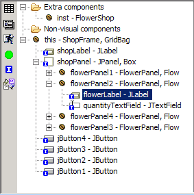
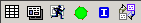

Outline View
The Outline View
is where the parts of the GUI you are building are layed out in a tree
format.

There are three root nodes of the tree:
- Extra components - these include the menu bar and visual components which do not have a parent
- Non-visual components - these include all non-trivial non-visual components like models for JComboBoxes, ButtonGroups etc
- the root visual component.
The outline view is useful for:
- selecting components (click on one or more components)
- moving components (just drag components around the tree)
- copying/pasting
components (eg, on Windows platforms, hold down Ctrl while dragging a
component to paste a copy of the component).
- adding
components using the context menu - right-click on a component and
choose the component to add (if these menu options are enabled in the Preferences Page).
Editor Actions
The other use of the outline page is as a holder for six editor actions.
At the top or left of
the outline you will see these six icons: .
From left-to-right, these are:
- The
"Grid size" button - pressing multiple times reveals or hides a
snap-grid of various sizes which, when visible, is used by Jigloo to
align the edges of the components.
- The "Preview" button, which pops up a preview of the form which you can interact with, before saving and compiling the code.
- The "Run" button, which is a short-cut to compiling and running the code.
- The "Parsing" button
- this toggles code-parsing on and off - if you are going to be typing
a significant amount into the java editor you might want to turn
parsing off so that Jigloo does not waste time trying to parse the code
as you are changing it. Then once you are finished you can turn parsing
on again and Jigloo will incorporate your code changes. You can also
toggle parsing by hitting Alt+Ctrl+P in the java editor. If parsing is
disabled a" parsing disabled" label will appear in the form editor. When Jigloo is parsing the code a "parsing..." label will appear temporarily.
- The "Inheritance"
button - this toggles the display of inherited or publically-accessible
fields. If it is blue then only directly-inherited fields are shown; if
it is green then all inherited fields are shown; if it is red then no
inherited fields are shown. In the screen shot of the outline view you
can see several publically-accessible fields of included classes (eg,
the FlowerPanel.flowerLabel field) as well as fields inherited from the
superclass (eg, the shopPanel field which is inherited from the
ShopFrame class, which is the FlowerShop's superclass).
- The "Swing/SWT Toggle", which will convert the GUI between Swing and SWT.